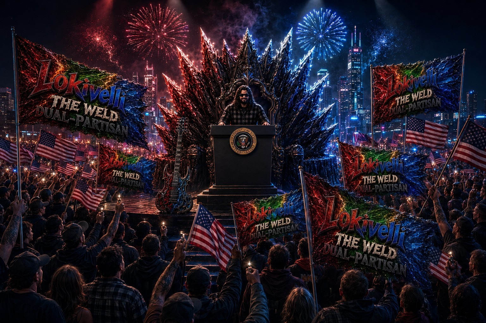
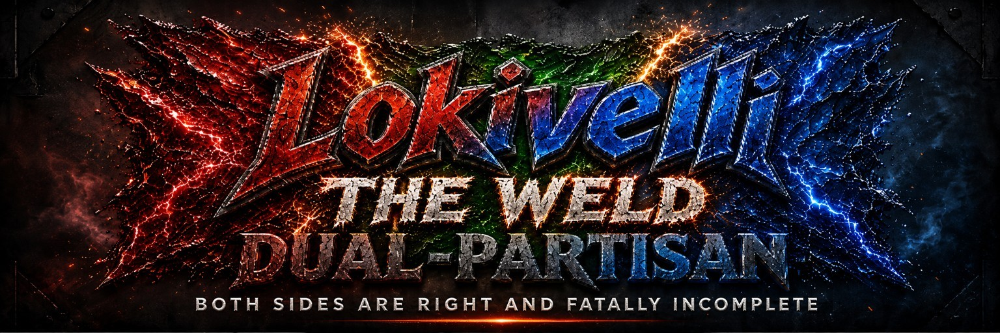
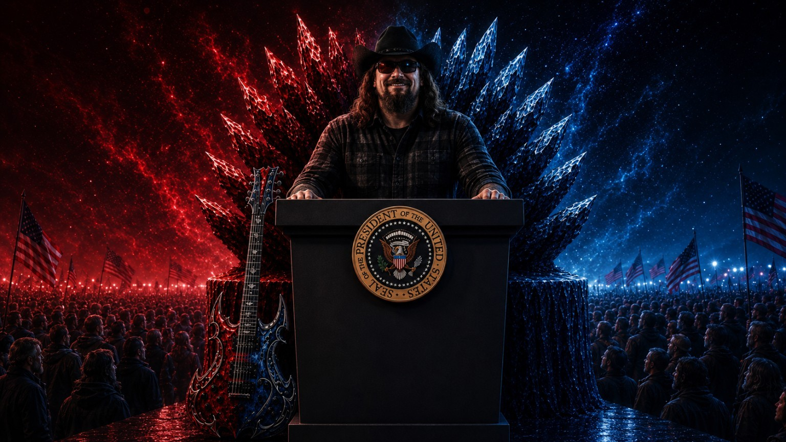
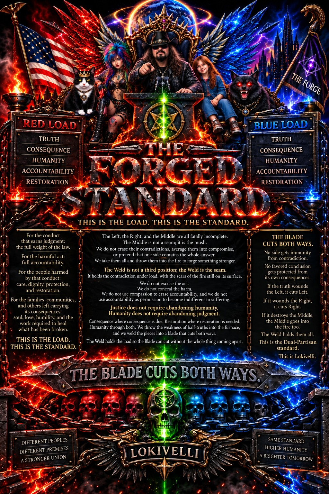

Consequence.
Responsibility, competence, verification, measurable gates, and penalties where conduct harms other people.


Both sides are right and fatally incomplete
The Weld · a presidential campaign built to make opposing truths carry one structure

Both sides can carry truths and still be fatally incomplete. The job is not to blur them into a middle. The job is to weld the necessary loads into a system that survives reality.
The method is to preserve competing load cases and force the mechanism to satisfy both where reality requires both.
Responsibility, competence, verification, measurable gates, and penalties where conduct harms other people.
Clinical handling, second chances, access, rehabilitation, public investment, and pathways back into productive participation.

The site no longer pretends everything is one brochure. Campaign framing, policy architecture, independent research, legal-rights reference material, experimental labs, and provenance each get their own lane and their own status.
Select any route chip or system card. If it has not cleared its integration gate, the site says so instead of quietly throwing you into a dead page.
Select a pillar. The mechanism, dependencies, failure condition and present build state are exposed instead of hidden behind a campaign slogan.
Research lives beside the campaign rather than underneath it. Counter-evidence, failed claims and source weakness are first-class states.
Economic and technical gating across music, publishing, scholarship and platform infrastructure, with the counter-trend preserved.
Escalation thinking from terrestrial containment toward proposed remote, automated and orbital isolation architectures.
Raw to extract to derive to synthesize to attack to adjudicate to receipt. Hashes prove byte identity, not truth.
Five load-bearing tracks. The speech is public; the deeper engineering, sourcing and proposed containment material live behind separate gates.
The Address page is live. Long-form media loads on request. Public videos remain the durable viewing endpoints.
A polished interface can make a bad claim look official. This site is being rebuilt specifically so presentation state and evidence state stay separate.
Original files, screenshots, datasets and captures stay untouched. Derived visuals are convenience layers.
Failed branches and corrections become lineage. Silent replacement is not source integrity.
Legal review, cost verification, sourcing, pilot evidence and failure criteria remain separate gates.
The campaign front door should make it easy to reach the source, the public address, the rights explorer and the research without pretending the unfinished pieces are finished.